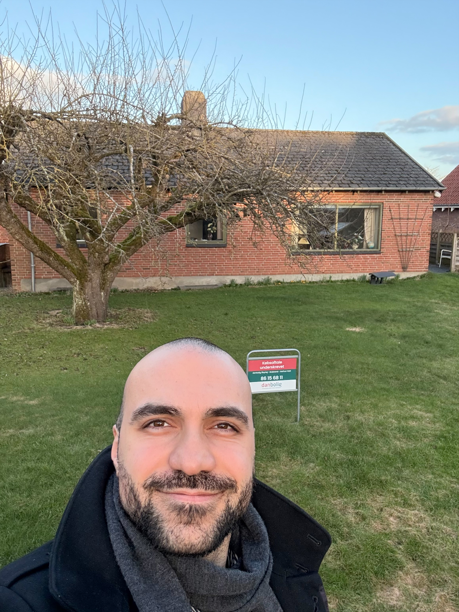

Min historie
Jeg gør
drømme til virkelighed.
Jeg startede min karriere i ejendomsbranchen fordi jeg forstod tidligt, at bolighandel er noget af det mest personlige, man kan gøre. Det er ikke en transaktion. Det er en livsbeslutning.
Med over 300 gennemførte handler — salg, køb og udlejning — har jeg hjulpet familier, førstegangskøbere, investorer og par i alle livets faser. Uanset situationen er min tilgang den samme: ærlighed, nærvær og resultater.
Jeg bor selv i Aarhus. Jeg kender gaderne, kvartererne, priserne og mulighederne. Det er ikke bare mit arbejde. Det er min hjemby, og jeg er stolt af at repræsentere den.